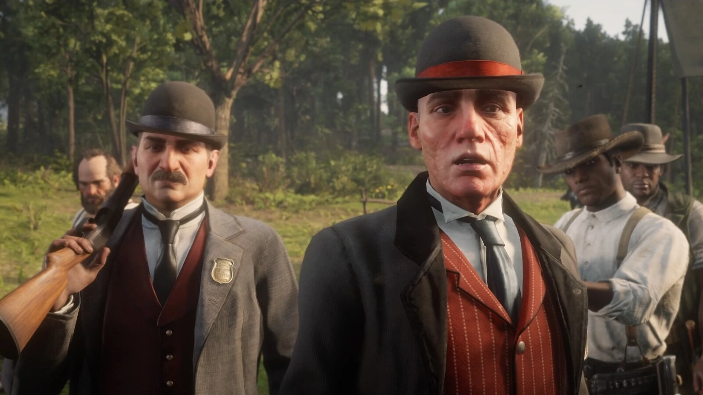
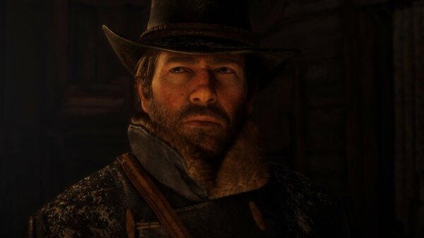
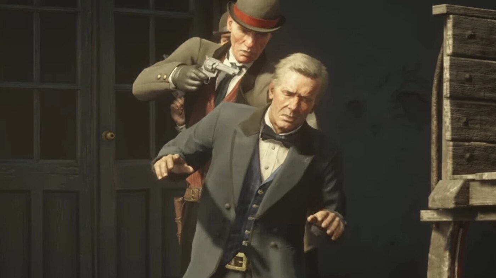

Character · Pinkerton Agency
Andrew Milton
Agent Andrew Milton is the lead Pinkerton detective hunting the Van der Linde gang in Red Dead Redemption 2. Calm, relentless and self-righteous, he is the human face of the law closing in on Dutch's gang.
Milton personally kills Hosea Matthews during the Saint Denis bank robbery and pursues the gang all the way to its final days.
- Died
- 1899
- Status
- Deceased
- Nationality
- American
- Affiliation
- Pinkerton National Detective Agency
- Role
- Detective
- Games
- Red Dead Redemption 2
Biography
The hunt
Backed by Leviticus Cornwall and the state, Milton and his partner Agent Ross track the gang across the country, confronting Arthur and Dutch several times and slowly tightening the net.
Killing Hosea, and the end
During the botched Saint Denis bank robbery, Milton executes Hosea in the street. He keeps up the pursuit to Beaver Hollow, where he is shot dead by Abigail Marston.
Personality
Milton is composed and moralizing, convinced he stands for civilization against savagery. His calm certainty makes him more chilling than any hot-headed lawman.
Relationships

Dutch van der Linde
The gang leader Milton is determined to bring in, and whose downfall he patiently engineers.

Arthur Morgan
Dutch's enforcer, whom Milton confronts and taunts repeatedly across the hunt.

Hosea Matthews
The gang elder Milton executes in the street during the Saint Denis bank robbery.

Abigail Marston
The woman who finally kills Milton at Beaver Hollow.
Death and fate
Milton is killed at Beaver Hollow in 1899. Cornered by the gang, he is shot by Abigail Marston, but not before his words help expose the traitor within the gang.
Behind the scenes
Milton appears throughout Red Dead Redemption 2 (2018) as the gang's chief pursuer. He is the recurring, patient antagonist who represents the law itself rather than a personal vendetta.
Trivia
- He works for the Pinkerton National Detective Agency.
- He kills Hosea Matthews during the Saint Denis bank robbery.
- He is killed by Abigail Marston at Beaver Hollow.
Gallery
